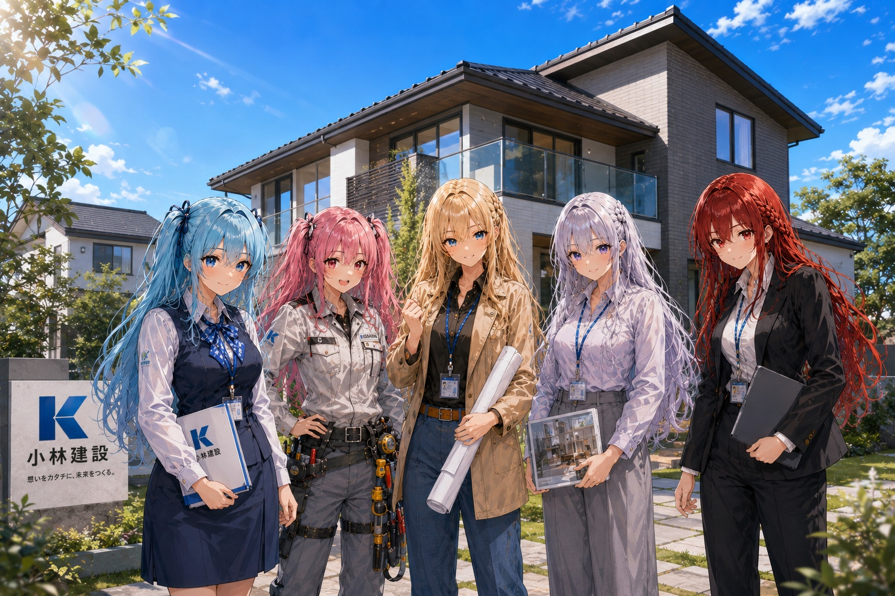
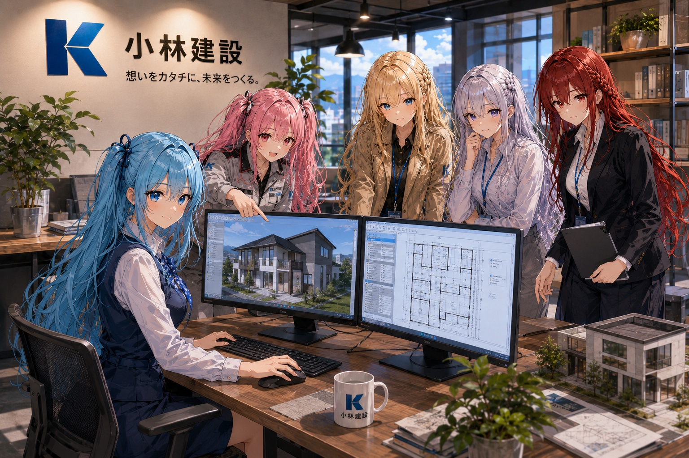
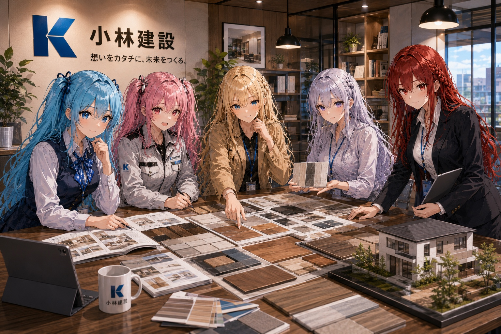
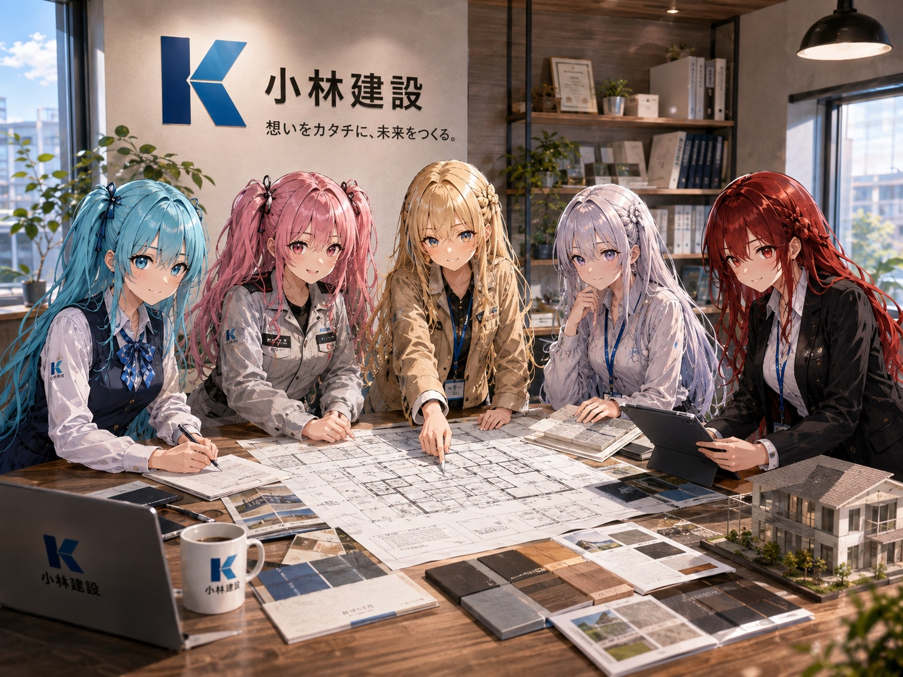
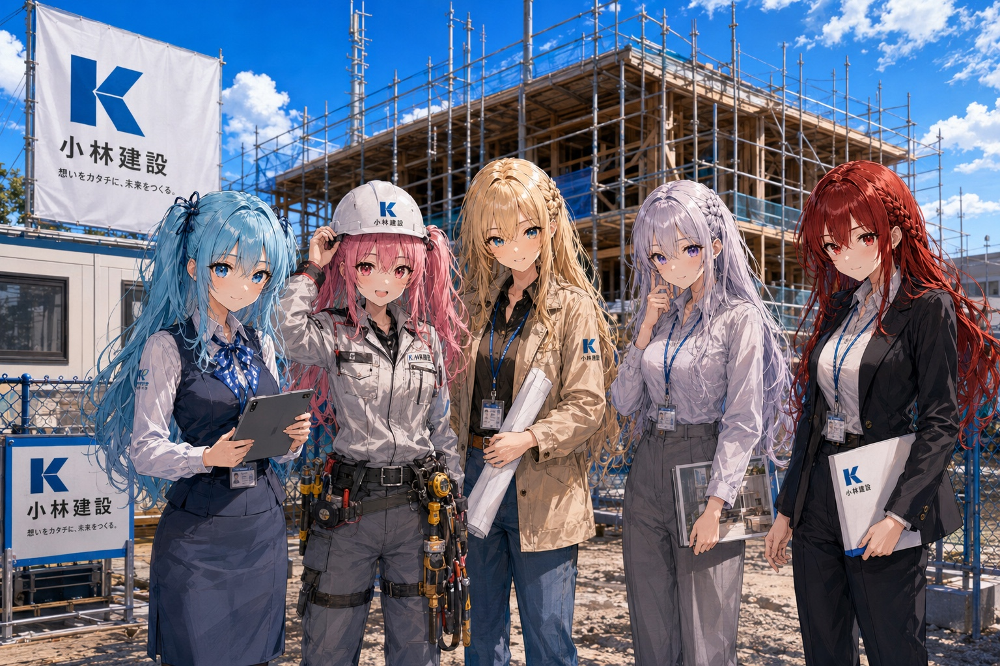
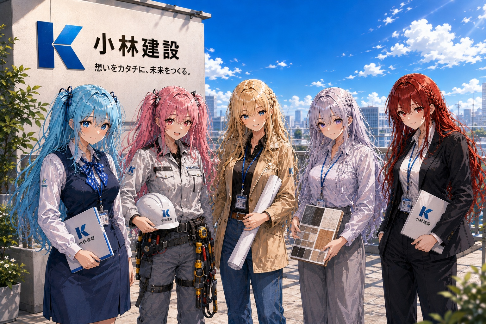

埼玉県入間市 ｜ 内装・リフォーム・マンション改修
設計から施工、アフターサポートまで、ワンストップで安心の家づくりを。解体から仕上げまで、一棟一棟に向き合う施工店です。
ABOUT
小林建設は、埼玉県入間市を拠点に活動する内装・リフォーム専門の施工店です。マンション・戸建ての改修工事を中心に、解体から下地、仕上げまでを一貫して手がけています。
大手にはできない小回りと、現場を知る職人ならではの目線。図面通りに進めるだけでなく、実際の建物の状態や暮らし方に合わせて、無駄のない工事をご提案します。
代表
小林 宏次

SERVICE
専有部の間取り変更、水回り移設、内装全面改修まで。管理規約や躯体制約を踏まえた施工計画をご提案します。
クロス・床材の張替えから、断熱・防音を含めた内装のやり直しまで、住みながらの工事にも対応します。
退去時の原状回復、部分解体、スケルトン工事まで。廃材の分別・処分費用も事前にお見積りいたします。
DESIGN

間取りと外観パースを並べて確認しながら、仕上がりのイメージをすり合わせます。

模型やサンプルも交えながら、細部まで納得いただけるまで相談に乗ります。

図面・素材選び・現場対応まで、住まいづくりを一貫して支えます。
FLOW
電話またはメールでご連絡ください。現地を拝見し、建物の状態と要望をお伺いします。
工事範囲と費用を明確にした見積書をお渡しします。仕様や工法についてもご相談に応じます。
解体・下地工事から仕上げまで、代表自ら現場に入り進行管理を行います。
お客様と一緒に仕上がりを確認し、引き渡しとなります。工事後のご相談も承ります。
TEAM
現場管理から設計、インテリア提案、営業、事務まで。それぞれの持ち場でお客様の「理想の住まい」を支えています。

EIRU
事務・経理担当
会社を支える縁の下の力持ち。
ANOS
現場監督・施工管理
安全第一で、現場をまとめるリーダー。
CELES
設計・建築士
図面の先にある、理想の建物を描く。
ALYA
デザイン・インテリア担当
空間を美しく、心地よく、暮らしを彩る。
REINA
営業・打合せ担当
お客様の想いをつなぎ、最適なカタチを提案。
CONTACT